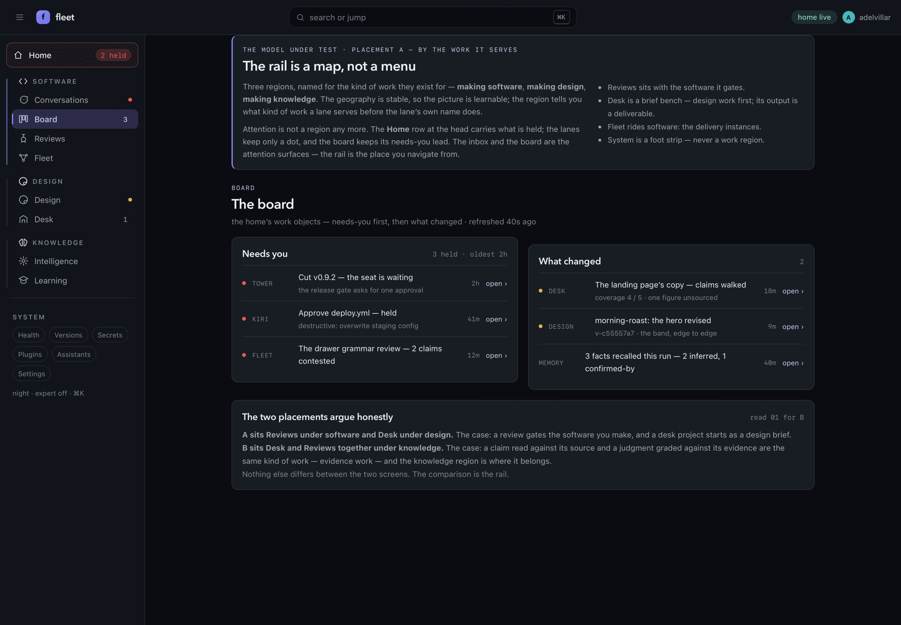
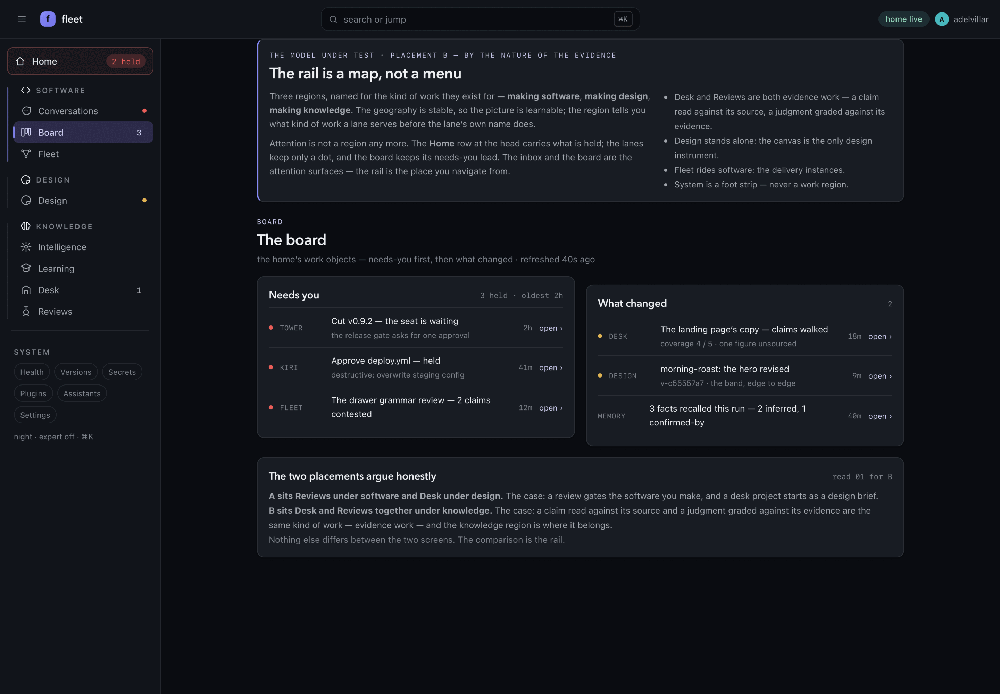
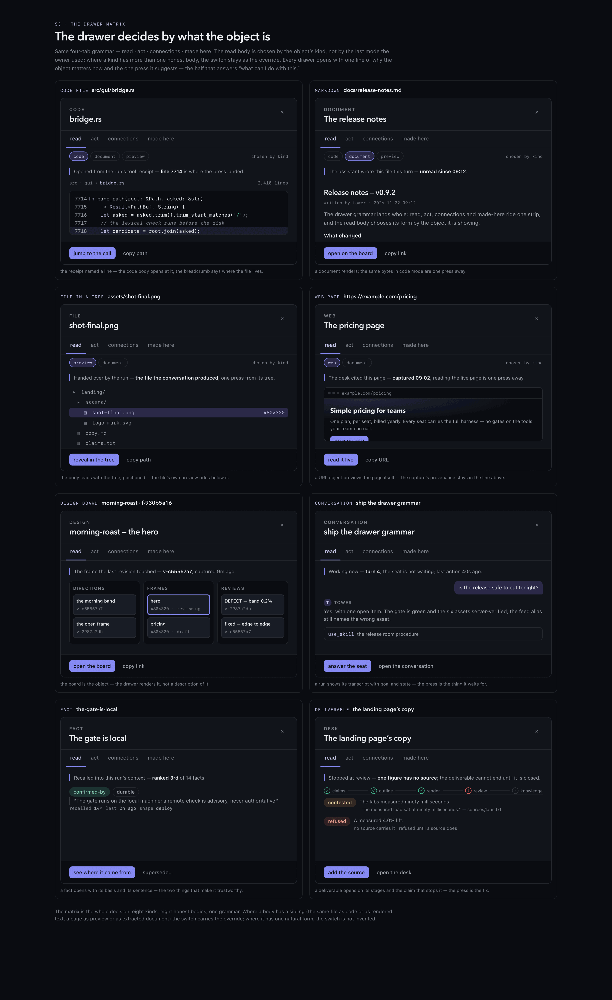
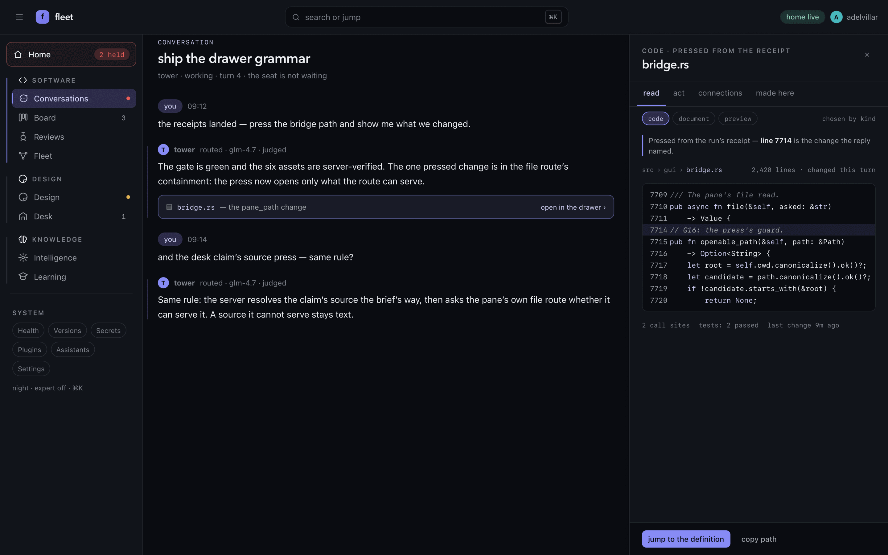
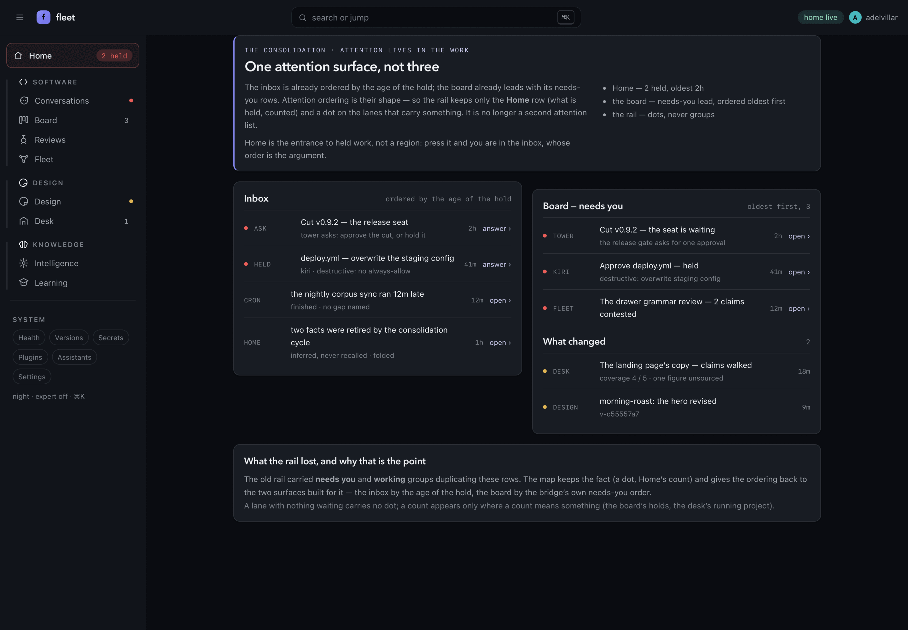
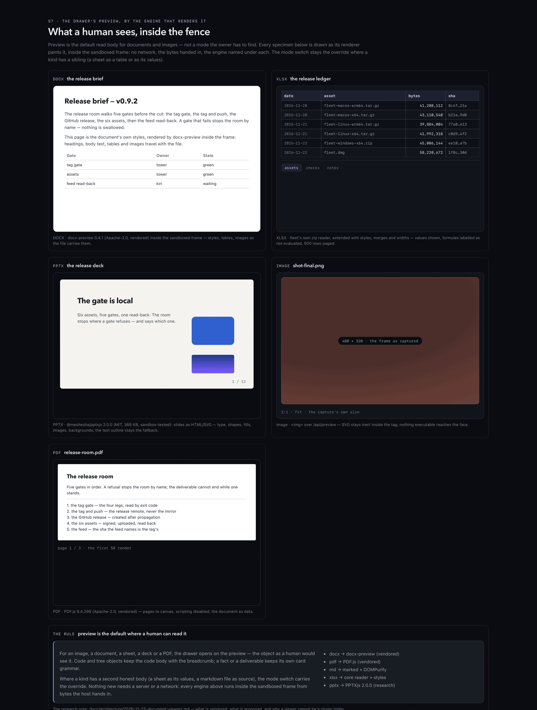
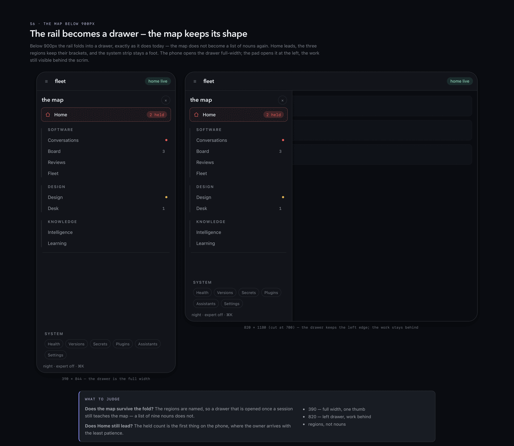

Every screen was captured in WebKit at its viewport and audited in-page: zero horizontal overflow, no text under the floor, and every text colour clears AA (4.5:1, or 3:1 for large text and control glyphs) against its own painted ground. The audit found four real defects in the shared mock sheet and they were fixed at the token, not the screen.